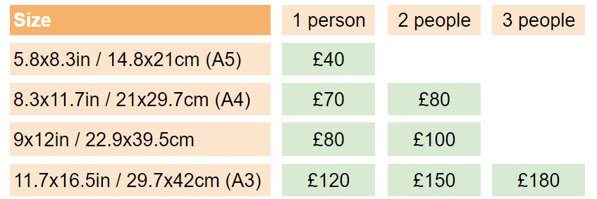

I mainly work on commissions but I also sell original art.
What I love about commissions is that I can turn people's ideas into reality and have the opportunity to make people happy with my art. Commissions are original and unique, no work will be the same and I won't sell a copy of your commission to anyone else!
The mediums that I mostly use are watercolours and graphite pencils although if you are looking for something different I am up for a challenge!
Click below for prices and details for ordering a commission:
A watercolour pet portrait is an amazing gift for pet owners, something they can proudly display at home as a keepsake.
To order a pet portrait contact me via Facebook Messenger, Instagram DM or through the contact form found on my website. I will be happy to answer any queries you may have! I will guide through the whole process and, once your order is made, I will keep you updated with the progress of your painting.
When choosing the perfect picture for your pet portrait try to take your pet outdoors, the natural light will help me capture the true colours of your pet and it will make a good quality photo. Only photograph your pet's head and shoulders, when painting I like to zoom in the picture to capture every single detail of the pet. Please don't edit or crop your pictures! Feel free to contact me if you would like more tips choosing the right picture, it's important to choose the right one as that picture will represent your pet in a portrait.
Your painting will be produced with good quality watercolours and acid free cold pressed watercolour paper (300gsm).
I require a small deposit at the start of the commission as security. The balance is then due when the painting is complete, and payment can be made by cash or Internet Bank Transfer. You can either collect your order from Chesterfield area and pay by cash or I can post it to you (postage fee will be charged) after payment is received.
I am currently taking commissions for hand drawn graphite portraits. These make unforgettable and unique gifts for birthdays, weddings, Christmas and other special occasions.
I draw these portraits with a lot of detail and try to make them as realistic as possible. The photograph you choose will determine how good and realistic the portrait will be - The better quality of the photo, the better the portrait. Feel free to contact me if you need help choosing the photo or if you need any tips to take a better photograph.
To order a graphite portrait contact me via Facebook Messenger, Instagram DM or through the contact form found on my website. I will be happy to answer any queries you may have! I will guide through the whole process and, once your order is made, I will keep you updated with the progress of your drawing.
I require a small deposit at the start of the commission as security. The balance is then due when the painting is complete, and payment can be made by cash or Internet Bank Transfer. You can either collect your order from Chesterfield area and pay by cash or I can post it to you (postage fee will be charged) after payment is received.
I am taking commissions for personalised greeting cards. These are hand painted in watercolours and only cost £5 plus postage!
I can draw anything you may like on the card and also write a message with a nice calligraphy. Send me pictures of what you would like me to draw, let me know your ideas and leave the rest to me!
To order a custom greeting card contact me via Facebook Messenger, Instagram DM or through the contact form found on my website. I will be happy to answer any queries you may have! I will guide through the whole process and, once your order is made, I will keep you updated with the progress of your drawing.
If you are looking for something else that I have not mentioned on my page please let me know! I'd love to hear your thoughts and I don't mind drawing/painting something different for a change!
I have received commissions for house paintings, cartoon paintings, baby scan paintings and more! These are special requests and I will give you a quote after talking to you.